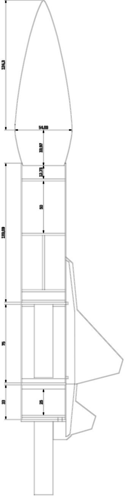
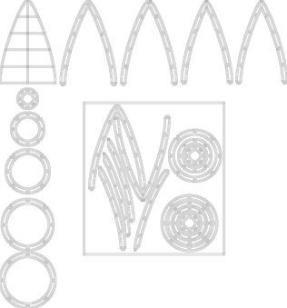
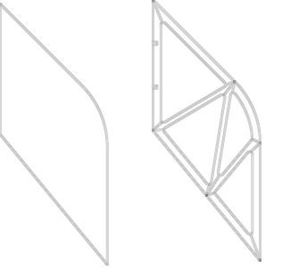

Zhang Mingchang
Mechanical design, robotics software and machine vision
I studied Measurement and Control Technology and Instrumentation at Hebei University of Science and Technology, where my best work outside class was designing and building the hardware of a solid-fuel rocket. I then trained in software at NUS-ISS, where I have completed the coursework of the Graduate Diploma in Systems Analysis (graduating January 2027). I am now bringing the two together in robotics.
Project 1 · Hardware
Solid-fuel rocket: hardware design and fabrication
I was mainly responsible for the rocket's hardware: the structural design, the drawings and the fabrication of the whole rocket, from the nose cone, fins and body tube to the recovery system. A teammate handled the software.


How I designed and built it
- Worked out the overall layout in OpenRocket, checking the positions of the centre of mass and centre of pressure for stability, then modelled the details in SolidWorks.
- Drew the parts in CAD, exported them as DXF files and cut them on a laser cutter: balsa and plywood ribs, fins and bulkheads.
- Built the airframe with carbon rods, carbon-fibre reinforcement, a fibreglass-and-resin body tube and some 3D-printed parts.
Recovery system: from side hatch to piston ejection
This was my main contribution. The old design released the parachute through a side hatch and opened only about one time in two, because the canopy caught on the rocket body. I replaced the hatch with a piston: gas from a small ejection charge pushes the nose cone and the parachute out of the tube together, so the canopy has nothing to snag on. I found the charge size by testing, proved the design with a ground test, and the team adopted it. None of the ten cohorts before us had tried this structure, and the teams after us kept using it.


From drawing to part
Each pair shows a cutting drawing and the part made from it.





As group leader: a target-altitude event
In 2022 I led the rocket group. The event changed to target altitude, scored on how close the rocket's highest point came to 40 m. Before training began, I redesigned the rocket's internal structure and drew and built the new version myself. Its first test flight reached 38 m, and that design set the direction for the group's competition model that year.
Also: Third Prize in the University Aerospace Innovation Challenge 2021 (university round), with a model rocket where I did everything except the software.
Videos


Project 2 · Robotics software
ROS 2 waypoint patrol with SLAM and Nav2
A TurtleBot3 in Gazebo builds a map of its arena with SLAM, then uses Nav2 to visit three waypoints one goal at a time. The patrol node skips any waypoint that fails or times out and prints a summary at the end.
What I did:
- Set up ROS 2 Jazzy, Gazebo, SLAM Toolbox and Nav2 on WSL2.
- Ran the SLAM mapping, saved the map and ran Nav2 localization (AMCL) on it.
- Chose the waypoints, wrote the parameter file, and built and ran the package.
- Designed and ran the tests below, and debugged the problems along the way.
Tests
| Test | Setup | Result |
|---|---|---|
| 1. Clear route | No extra obstacles | 3/3 waypoints reached, 128.7 s |
| 2. Obstacle on route | 0.3 m box on the B → C route, not in the map | 3/3 reached in all 3 runs. The planned B → C path was 1.71 m with the box, against 1.46 m without it |
| 3. Unreachable waypoint | Box placed on top of B, 60 s timeout | A reached, B timed out and was skipped, C reached: 2/3, 105.6 s |
Limits: only a few runs per test, one obstacle size, simulation only (Gazebo ran at about 50–75% of real time on my laptop), no moving obstacles and no real robot.
The main problem I debugged. Nav2 planned a path, but the robot did not move, and the log said "Failed to make progress". From the logs and topic rates, I found that the slow simulator delivered LiDAR scans only about every 0.6 s, while Nav2's collision monitor, the last safety check before speed commands reach the wheels, treats scans older than 0.2 s as stale and blocks every command.
I raised scan.source_timeout to 2.0 s in a project copy of the Nav2 parameter file. Changing it at runtime had no effect, because the node only reads it at startup. On a real robot this setting would be unsafe, since it would let the robot act on old sensor data. Here it only compensates for a slow simulator.

Built on TurtleBot3 (ROBOTIS), SLAM Toolbox and Nav2. The patrol node was written with AI assistance and explained to me block by block; the setup, testing and debugging were my own.
Project 3 · Machine vision
Weld crack detection in X-ray images
Weld inspection is skilled work that is usually done by eye. For my final-year thesis, I built a system that detects cracks in X-ray images of welds. I enhanced the images with OpenCV, labelled the cracks myself and trained a YOLOv5 detector. It was my first experience of teaching a machine to see, and it showed me how much a model depends on how carefully its data is prepared.
Project 4 · Planning and evaluation
LoomyTrip: route ordering and model evaluation
LoomyTrip is a travel planner for Singapore that turns a free-text trip description into a day-by-day itinerary. Two parts of my work on its AI service are close to robotics.
- Route ordering. Each day's stops are ordered with a nearest-neighbour route, which a 2-opt local search then improves by reversing any segment that shortens the total distance. On 50 seeded routes of real Singapore attractions, it was 1.8% shorter on average and never longer. On a deliberately bad layout, it cut the distance by 31.3%.
- Evaluation instead of judging by eye. I scored the language model's place extraction against hand-labelled answers with precision, recall and F1, and used accuracy, speed and cost to choose the model.